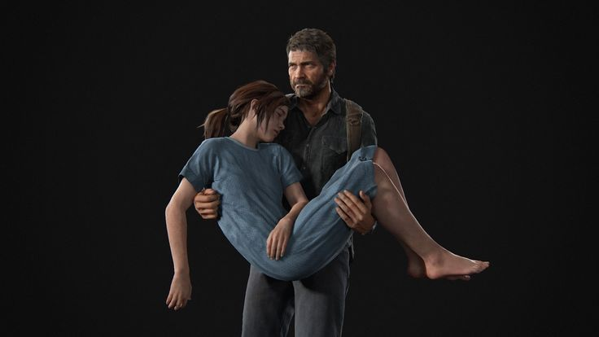
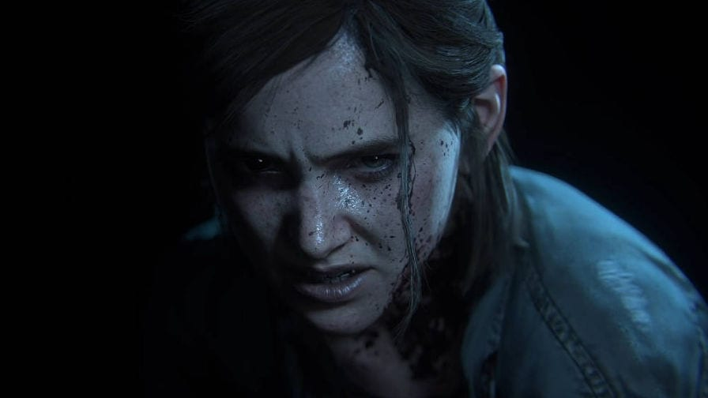

When you're lost in the Darkness, look for the light.

You'll only survive if you keep finding something to fight for.
Gameplay and what's at stake
The Last of Us Part I is a third-person, narrative-driven action game that highlights survival and emotional immersion through its gameplay. We follow the story of Joel as he navigates a post-apocalyptic version of the United States suffering from a fungal infection that turns humanity into violent, mutated fungal creatures. The gameplay consists of a balance of stealth, combat, exploration, and resource management. Resources are deliberately scarce, forcing players to approach encounters thoughtfully rather than impulsively, with stealth being the most viable strategy. This encourages players to hide, listen, and plan their movements to avoid the infected. The combat is brutal and grounded, relying on improvisation from players and quick decision-making. Exploration plays a key role in the survival of Joel and his story and ultimately tests players on their post apocalyptic instincts.
In The Last of Us, what’s at stake is dependent on both personal and global levels. On a global level, Ellie’s immunity to the infection represents the potential survival of humanity, as the Fireflies, a group claiming they can curate a cure, plan to use her. The question is how. On a personal level, Joel’s relationship with Ellie becomes a matter of emotional survival, as he and the way he sees her grows the resolve of the game becomes unclear in finality. Each encounter with infected and human enemies also heightens the risk of death, reinforcing tension between survival, morality, and emotional attachment.
Above is a sound clip from one of the deadliest and most common infected enemies within the game, called a Clicker. Players learn quickly that sound is one of the most useful ways to determine what kind of enemy they're dealing with, giving players an advantage when it comes to choosing a combat style.
This sound concept within the game reminds me of the acoustic mirror concept described by Anzieu in The Skin Ego(1).
In which sound is exchanged between infant and mother, establishing early cues used to distinguish a response, which is seen destabilized by Clickers. Clickers are aware through echolocation, meaning sound becomes the tool through which life and death are determined. When the player makes noise, that sound is returned violently, breaking this reassurance of the acoustic mirror. Instead of confirming a subjective response, these echoed sounds mark us as the player as prey, turning those early psychic structures of attachment into a mechanism of threat.

Narrative Arc
The story begins in collapse, showing the outbreak of an infection and Joel’s sudden loss of his daughter because of it, an event that establishes his emotional numbness and survivalist nature. Twenty years later, the world is broken into quarantine zones, militant control, and lawless territories. Joel is introduced as a hard-shelled smuggler, with his only motivation being survival. In the midst of our first task as players, being a smuggling job, we are introduced to a character named Ellie, a young girl with no background or past attachments who happens to be the only one with a rare immunity to the infection. His initial goal and the set goal of the entire game is to escort Ellie across the country to a hospital in exchange for supplies, with no emotional investment in her beyond the task itself. As the story progresses, the external struggle of the infected and the dangers they face while escorting Ellie transforms into internal turmoil and the development of Joel. These hardships soon translate and add to the bond between Joel and Ellie.

Endgame
Throughout this journey and by the end of it joel and Ellie establish a bond similar to the one he had with his daughter, we learn the reason for Ellies smuggling and exchange was to create a cure to the infection from her immune dna, in which Ellie must undergo a surgery that would be the ultimate sacrifice, death for a cure that would be hoped to lead to world salvation. Joel, at this point, sees Ellie as his own and rejects the operation, ultimately escaping the hospital with Ellie, leaving players with the question of why, maybe out of love, selfish desires, or maybe because he knew the operation wouldn't have worked.
Personal conclusion
Throughout this course and the readings provided, I found this game's resolution, make-up, and purpose fitting and figured it would apply to the concepts introduced to us. This game was actually the very first video game I completed growing up, and I decided it would be in my best interest to analyse it in comparison to our modules and analysis on Limbo. Concepts like Lindley, Ernest. "A Study of Puzzles with Special Reference to the Psychology of Mental Adaptation" and why we play games allowed me to recognise the purpose I had for completing this game and mastering its complex survival structures, and what that meant in terms of the rest of my gaming journey. Other readings, such as Freud, Sigmund." Beyond the Pleasure Principle"(New York and London: Norton, 1990 (1920)), to me entertain the narrative of The Last of us becasue of Joel's/the player's behavior, driven not by the pursuit of pleasure or happiness, but by repetition and a death drive, he continously reenacts traumatic loss through violence and survival rather than healing it which is an analyse Ive come to gather throughout this course, the cycle of violence.

above is Ellie grown up and a teaser for the second game.
References
(1) Anzieu, Didier. "The Sound Envelop" in The Skin Ego. Chris Turner (New Haven: Yale University Press, 1989).
(2) Lindley, Ernest. "A Study of Puzzles with Special Reference to the Psychology of Mental Adaptation" in The American Journal of Psychology. July 1897. Volume 8, number 4.
(3) Freud, Sigmund. Beyond the Pleasure Principle. James Strachey (New York and London: Norton, 1990 (1920)).
all PNG images from pngegg.com
Audio clip recorded from my own in-game recording
intro trailer from credited TikTok account seen at the end of the video